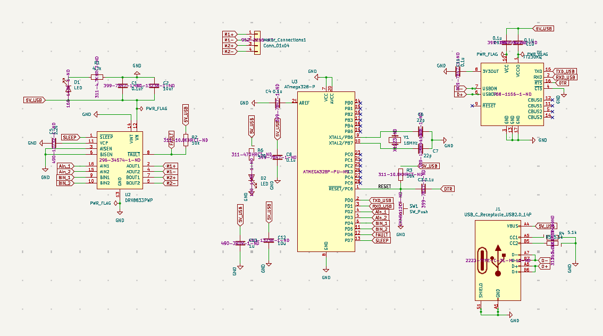
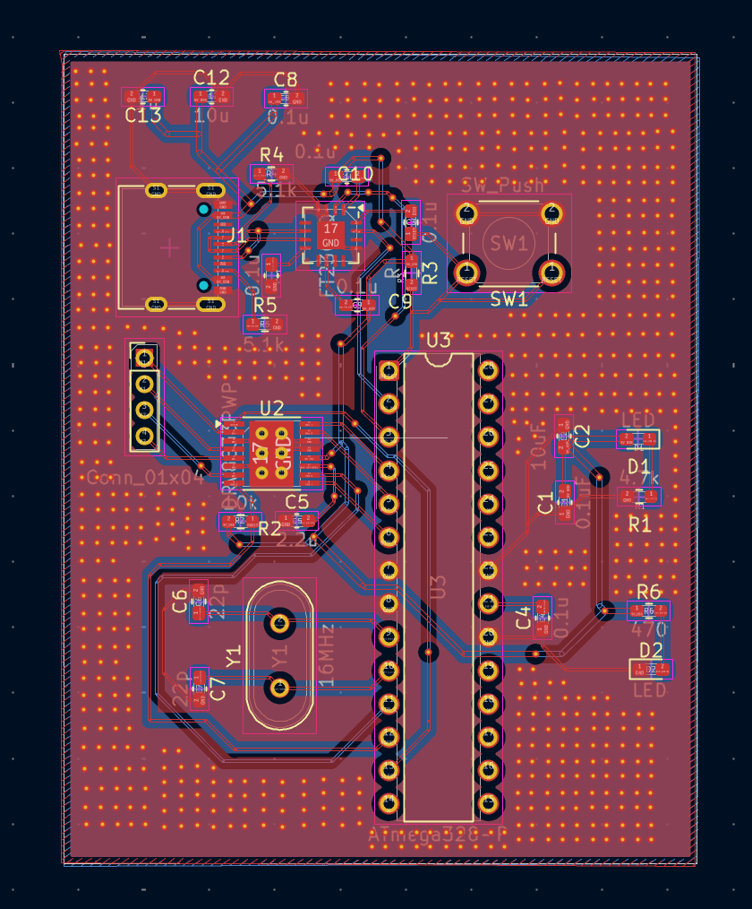
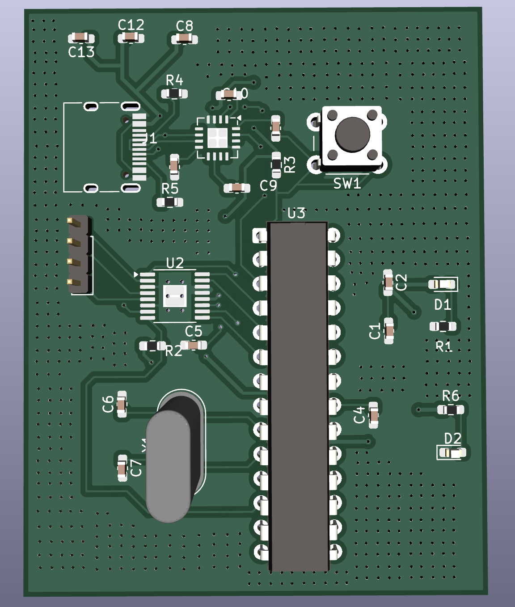
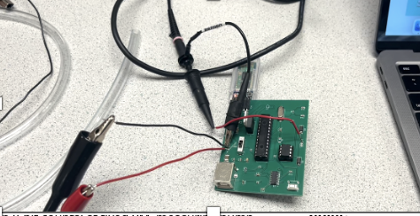

Pump Control PCB



Testing

Overview
This project designs and validates a low-power, sub-$50 microfluidic control system for driving micropumps that push liquid across the microfluidic channel of a wearable patch biosensor for Parkinson's disease on KiCAD. Built around an ATmega328P microcontroller and a TI DRV8833 dual H-bridge driver on a single 2-layer PCB, it uses 8-bit PWM in an open-loop configuration to control pump speed and direction. Power draw stays at 0.1–0.2W, roughly an order of magnitude below typical Arduino + L298N setups, showing that low-cost, off-the-shelf hardware can meet the energy and size constraints of a continuous, wearable biosensing platform.
More details
The board integrates a USB-C/FT230XQ programming interface, the ATmega328P (16MHz), the DRV8833 H-bridge with fault reporting, and a header for direct pump connection, driving fluid through the patch's microfluidic channel to keep fresh sample flowing over the sensing electrode. A 3.3V rail drawn from the FT230XQ's onboard regulator, a low-RDS(on) driver, and tight decoupling near each IC keep power and switching noise low, while placing the H-bridge next to the motor connector and pouring continuous ground planes minimizes parasitic loops and EMI. We ran SPICE simulations to verify reduced power draw and leakage ahead of fabrication, then tested the board with an actual pump and confirmed clean bidirectional switching, with total power meeting the 0.1–0.2W target and BoM cost under $50.
← Back to projects